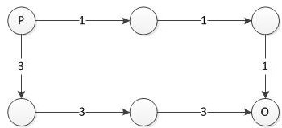

HDU3860. Circuit Board
内存限制：10000/5000 MS (Java/Others) 时间限制：131072/65536 K (Java/Others)
题目描述
Recently Silence has got a new circuit board with which he will do a new experiment.
Now we can assume that the circuit board is made of R lines and each line has C holes. And we can only put a wire between the adjacent holes. We say a hole is adjacent to another one if and only if it is at the up, down, left or right side of the other one.

This is a circuit board and we can add wires like this.
Now P holes on the left side of the board are power sources and each one can afford a specific amount of electric current. And O holes on the right side of the board are output interfaces and each one needs a specific amount of electric current.
In order to complete the experiment we should put some wires on the board so that we can meet every output interface on the board (we don’t have to use up all the power). But the circuit board is a little old so between some adjacent holes we can only put a wire whose capacity is not greater than a specific value. And what’s more, some of the holes are fault holes which means the fault hole can’t be connect to any adjacent holes, we assume no power sources or output interfaces are fault holes.
Now we have several different kinds of wires and each kind of wire has a specific capacity. And we can use as many wires as we want of each kind. But as we know the wire which has a higher capacity is much more expensive than the one which has a lower capacity. So we should make the highest capacity of the wires we use as low as possible.
Now it is your turn to write a program to get the best solution whose highest capacity of all the wires is as low as possible. You can just output the highest capacity of the best solution.
Now we can assume that the circuit board is made of R lines and each line has C holes. And we can only put a wire between the adjacent holes. We say a hole is adjacent to another one if and only if it is at the up, down, left or right side of the other one.
This is a circuit board and we can add wires like this.
Now P holes on the left side of the board are power sources and each one can afford a specific amount of electric current. And O holes on the right side of the board are output interfaces and each one needs a specific amount of electric current.
In order to complete the experiment we should put some wires on the board so that we can meet every output interface on the board (we don’t have to use up all the power). But the circuit board is a little old so between some adjacent holes we can only put a wire whose capacity is not greater than a specific value. And what’s more, some of the holes are fault holes which means the fault hole can’t be connect to any adjacent holes, we assume no power sources or output interfaces are fault holes.
Now we have several different kinds of wires and each kind of wire has a specific capacity. And we can use as many wires as we want of each kind. But as we know the wire which has a higher capacity is much more expensive than the one which has a lower capacity. So we should make the highest capacity of the wires we use as low as possible.
Now it is your turn to write a program to get the best solution whose highest capacity of all the wires is as low as possible. You can just output the highest capacity of the best solution.
输入格式
There are several test cases in this problem. The first line of the input is an integer T(1 <= T <= 10), which means there are T test cases in the input.
The first line of each test case is two integers R and C (2 <= R, C <= 200), which means the circuit board has R lines and each line has C holes. And the coordinate of the upper left corner is always (1, 1).
Then there is an integer P(1 <= P <= R) means P holes of the left side is power sources. And each of the next P lines has two integers Ai, Si (1 <= Ai <= R, 0 < Si <= 1000), which indicates the i-th power source is located at (Ai, 1) and can afford Si amount of electric current. Then there is an integer O (1 <= O <= R) means O holes of the right side is Output interfaces. And each of the next O lines has two integer Bi, Ti, (1 <= Bi <= R, 0 < Ti <= 1000), which indicates the i-th output source is located at (Bi, C) and needs Ti amount of electric current.
Then there is an integer Q (0 <= Q <= R*(C-1) + C*(R-1)), and the next Q lines each one has 5 integers x1, y1, x2, y2, m (0 < x1,x2 <= R, 0 < y1, y2 <= C, 0 < m <= 1000). That indicates between the holes at (x1, y1) and (x2, y2) we can only put a wire whose capacity is not greater than m. we assume that (x1, y1) and (x2, y2) are adjacent holes.
And then there is an integer K (0 <= K <= R * C – P - O). And each of the next K lines has two integers xi, yi, means there are k fault holes on the board and the i-th hole’s coordinate is (xi, yi).
Then there is an integer W (1 <= W <= 10000), means there are W kinds of wire we can choose. And the followed line has W integers u1, u2, …, uw. ui means the i-th kind of wire’s capacity is ui (0 < ui <= 100000).
The first line of each test case is two integers R and C (2 <= R, C <= 200), which means the circuit board has R lines and each line has C holes. And the coordinate of the upper left corner is always (1, 1).
Then there is an integer P(1 <= P <= R) means P holes of the left side is power sources. And each of the next P lines has two integers Ai, Si (1 <= Ai <= R, 0 < Si <= 1000), which indicates the i-th power source is located at (Ai, 1) and can afford Si amount of electric current. Then there is an integer O (1 <= O <= R) means O holes of the right side is Output interfaces. And each of the next O lines has two integer Bi, Ti, (1 <= Bi <= R, 0 < Ti <= 1000), which indicates the i-th output source is located at (Bi, C) and needs Ti amount of electric current.
Then there is an integer Q (0 <= Q <= R*(C-1) + C*(R-1)), and the next Q lines each one has 5 integers x1, y1, x2, y2, m (0 < x1,x2 <= R, 0 < y1, y2 <= C, 0 < m <= 1000). That indicates between the holes at (x1, y1) and (x2, y2) we can only put a wire whose capacity is not greater than m. we assume that (x1, y1) and (x2, y2) are adjacent holes.
And then there is an integer K (0 <= K <= R * C – P - O). And each of the next K lines has two integers xi, yi, means there are k fault holes on the board and the i-th hole’s coordinate is (xi, yi).
Then there is an integer W (1 <= W <= 10000), means there are W kinds of wire we can choose. And the followed line has W integers u1, u2, …, uw. ui means the i-th kind of wire’s capacity is ui (0 < ui <= 100000).
输出格式
For each test case, output one integer which is the minimum of the largest capacity we choose to complete the experiment. If we can’t complete it, output -1.
样例
样例输入
1
2 3
1
1 4
1
2 4
1
1 1 1 2 1
0
4
1 2 3 4样例输出
3
Hint
This is one of the solution of the sample input, so the answer is 3.